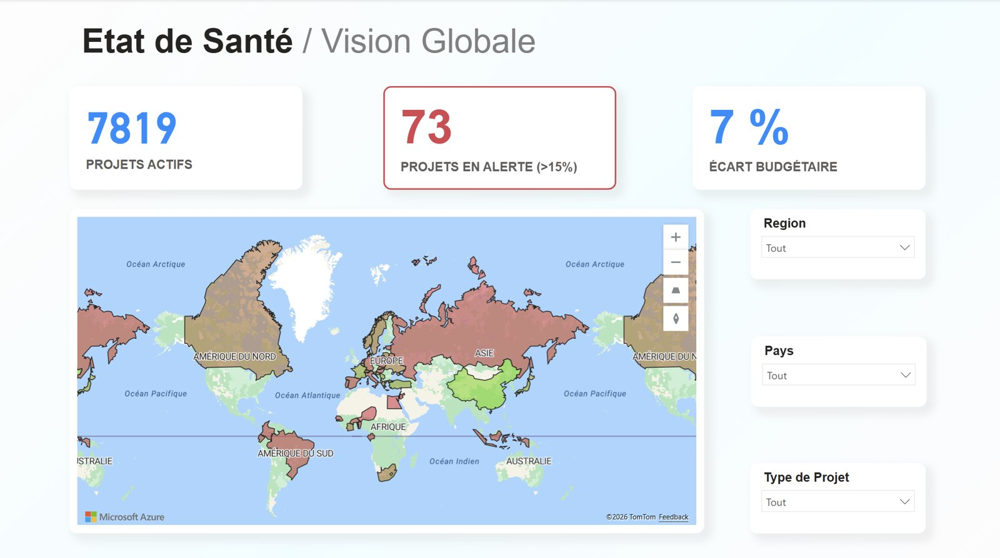
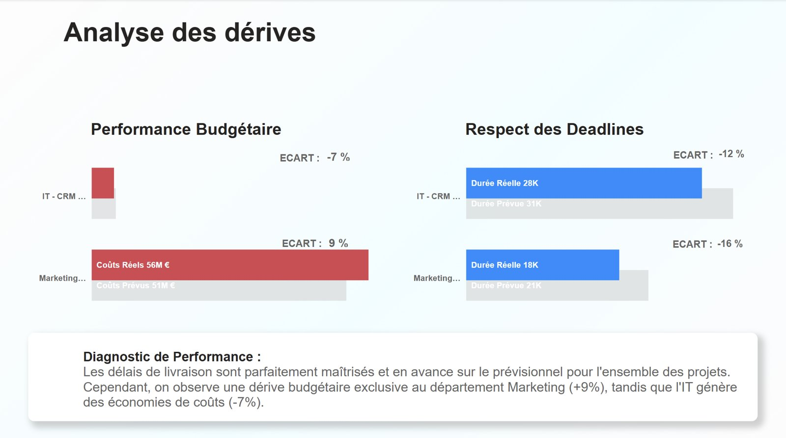
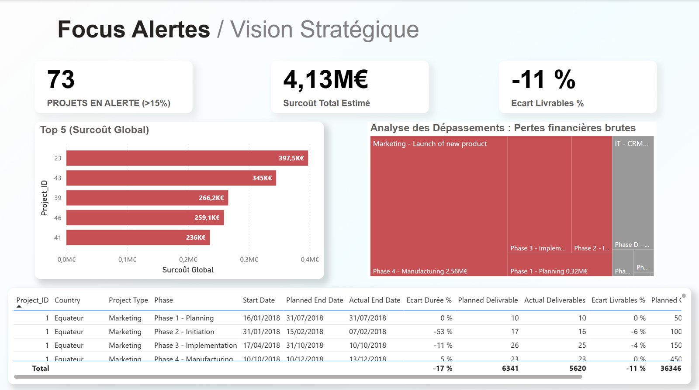

Sanitoral, un tableau de bord pour repérer les projets en dérive
Projet 7 du parcours. Power BI, Power Query, DAX, Product Strategy Canvas.
Contexte et besoin métier
Sanitoral, groupe international de soins bucco-dentaires, voulait que son service de gestion de projets repère les retards et les dérives de ses projets IT et marketing. Le tableau de bord devait servir trois publics, du directeur général aux directeurs pays, être mis à jour chaque semaine sans intervention technique et appuyer au moins un axe stratégique.
Données
Les exports du logiciel de gestion de projets de l’entreprise, couvrant les projets menés de 2018 à début 2022 et répartis en sept tables brutes sans lien entre elles, accompagnés d’un dictionnaire des données.
Démarche
J’ai commencé par formaliser les besoins de chaque public sous forme de user stories dans un Product Strategy Canvas, validé avant toute construction. J’ai ensuite restructuré les sept tables en un modèle en étoile, avec une table de faits centrale et trois dimensions (calendrier, pays, projets), et automatisé le nettoyage dans Power Query. Le tableau de bord suit trois indicateurs, les coûts, les délais et les livrables, avec une alerte dès qu’un projet s’écarte de plus de 15 % de son prévisionnel. Un onglet documente le canvas, le modèle de données et la procédure de mise à jour.

Résultats et impact
Le tableau de bord chiffre à 4,13 M€ le surcoût des projets en alerte. Il montre que les délais sont globalement tenus, voire en avance, mais que la dérive budgétaire est propre au marketing (+9 % par rapport au prévisionnel), alors que l’IT réalise des économies (−7 %). Une seule phase, la fabrication d’un lancement de produit, concentre 2,56 M€ de pertes. Les directeurs disposent ainsi d’un accès direct aux projets en dérive de leur périmètre, et l’équipe réalise seule la mise à jour, en trois étapes : remplacer les fichiers, actualiser, puis vérifier l’indicateur des projets en alerte.


Limites et prochaines pistes
Tous les directeurs consultent aujourd’hui le même tableau de bord. La prochaine étape serait d’utiliser la gestion des rôles de Power BI pour que chacun voie automatiquement les seuls projets de sa région ou de son pays.